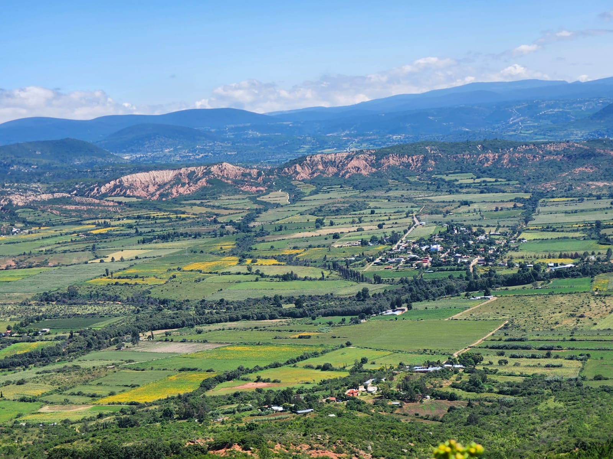

Se localizan en el estado de Oaxaca, en la region mixteca especificamente en la mixteca alta. Pertenece el municipio de San Ándres Sinaxtla, al distito de Asunción Nochitlán. Localizandose en un valle como se puede apreciar en la siguiente imagen

La ubicacion fue obtenida de google maps